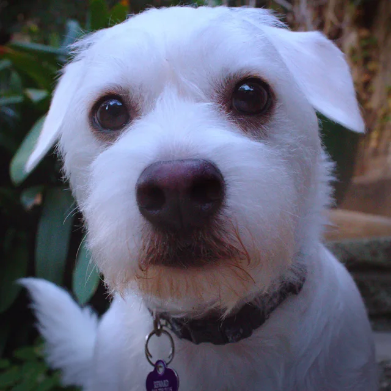
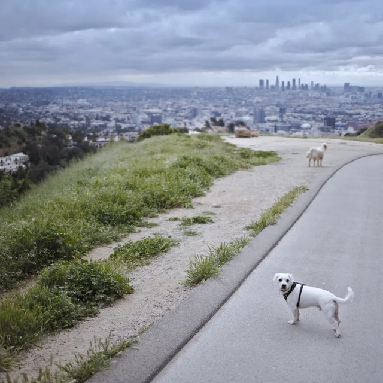
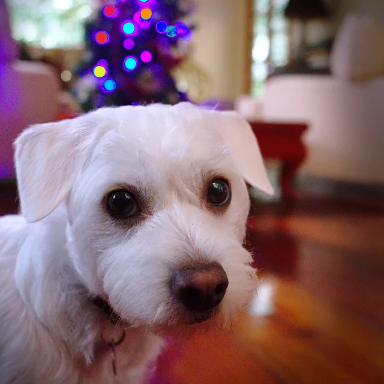
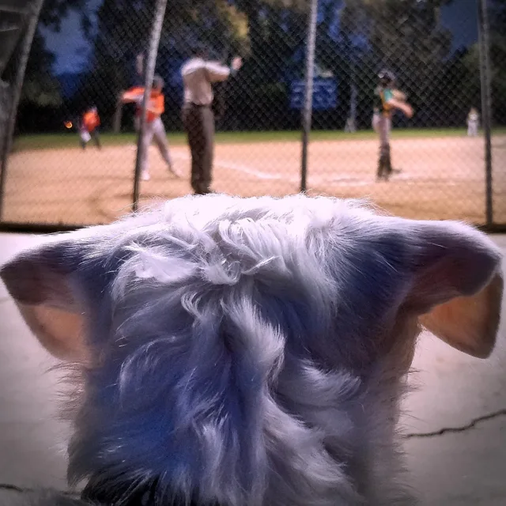

Barkley
@barkley
Harper Monkey Trail regular. Most mornings I take Jeff to the top.
1 Jeff, walked daily 0 squirrels caught
-
am i lost? i think i'm lost. i was under the impression carol was following me.
2.4k sniffs311 re‑woofs“call carol”
-
my brother jake and i just had lunch. apparently he thought the whole plate was for him.
1.1k sniffs87 re‑woofsjake has not responded
-
morning at runyon. taking my humans out. they need the exercise.
968 sniffs42 re‑woofsjeff is still catching his breath
made it to the top.
Jeff needs a minute, so here are some photos.

my photographer is falling behind again.- carol says this is my good side. unclear which side is the bad one.
- is this too close? i can get closer.
- security system is online. unless the sun is hitting the couch.

i was told to act natural. this is me naturally expecting something.
they keep hitting the ball away. nobody here understands fetch.